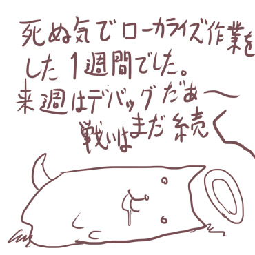

シルバーセカンド開発日誌
■
2015-04-11 (土) 気になるフリカツ▼【振リ返リマセン勝ツマデハ】
ちょっと体調が悪い状態が続く今日この頃です。
特に話題もないので
「不思議のクロニクル 振リ返リマセン勝ツマデハ(ｱｰｶｲﾌﾞ)」、
通称フリカツ（まだあんまり流行ってない！）の公開情報から分かる
原作からの違いなど見ていく感じにしていこうかなと思います。
現段階のブツが具体的にどうなってるか私にも分かりませんので、
本記事はあくまで私の主観・推測であって公式情報ではありません。
その点はご了承ください。
できあがったらソフト1本くらいもらえるといいんですけどね！
（でも遊ぶためのハードがない）
ということで、今回はさわりのところだけチェック！
比較情報は主に【フリカツ公式サイト】(ｱｰｶｲﾌﾞ)を参考にしています。
【キャラは一新！】
キャラや世界観などについては一新されるようです。
追ってくるのが「闇」でなく「光」になってたり、
王様がコンラス王になってたり、
STORYによると「その子」なる存在がいたり
（男女が明確ではないので主人公？）
といった具合に、世界観やストーリーに変化が加えられているようです。
妖精キャラっぽい人もティザームービーでチラ見えしてましたね！
イーリス的アドバイザー枠の可能性が濃厚ですが、
これで実はアドバイザー担当が別キャラだったら
それはそれで新しい気がします。果たしてどうなるか。
【システムはそこそこ継承？ 新システム有り】
システムに関しては「新システムがある」という言い方でしたので、
逆に言うと原作から継承される部分も多そうな雰囲気です。
ゼロから考え直しても同じところにたどり着く部分は多いと思うので、
使えるところはどんどん使っていただきたいですね。
ティザームービーを見る限り、無印にあった「連続攻撃」や
プラス版にあった「自動振り向き機能」などは
そのまま採用されてるっぽいので、
全体的な感触や遊びやすさに関しては元とほぼそのままか、
元よりアップグレードされている期待がありそうです。
あとなにげにティザームービー中で
狩人が地雷を踏んで爆発している？ のが新しい部分でしょうか。
この辺もそのうち新情報が出てくるかもしれません。
以下は気になった拍手返信です、いつもありがとうございます。
＞今日（4/1）は年に一度のシノビガミリプレイの日！て思ったら
＞意外な展開に。ウルフさん自身がコンシュマー進出と .
＞いうわけではないのかな？ とりあえずおめでとうですっっ
ありがとうございます！
私自身がコンシューマ進出しててもたぶんあまり売れないでしょうから、
片道勇者をより多くの人に楽しんでもらうにあたっては
いい流れになったんじゃないかなと思います。
なおシノビガミリプレイは実はストックがあるんですが、
今それどころじゃないので少々お待ちください。
＞（Vita TV買おうかな……についてのコメント） .
＞フリカツがVitaTVに対応するか判明してから買った
＞方がいいですぞ！（まだ詳細出てないっぽいので）
そういえばVitaTVに対応してないソフトがいくらかあるのを
思い出しました。気をつけた方がよさそうですね。
VitaTVをご検討に入れておられる方も、ご注意ください。 ■
2015-04-02 (木) ｺﾝｼｭｰﾏ化&正式ﾘﾘｰｽ！▼【エイプリルフール！】
ということでエイプリルフールは無事終了しました！
今回は、片道勇者コンシューマ化の本サイトでの初告知と、
片道勇者プラスの正式リリースのご報告となりました。
【2015年エイプリルフールサイトはこちら！】
今年のエイプリルフールは、ジョーク要素が一切ないという
なんだか珍しい年になりました。
ただ、スパイク・チュンソフトさんによるコンシューマ化、
「不思議のクロニクル 振リ返リマセン勝ツマデハ (当時のアーカイブ)」
の情報が名前的にガチでエイプリルネタだとお思いの方が
ほんの少数発生してしまったようなのでここで謝罪します！！
コンシューマ進出は！！ 本当です！！
スパイク・チュンソフトさんありがとうございます！
今後しばらくは、「不思議のクロニクル」の公開情報から、
原作とどういう差別化が図られるのか見ていく感じになりそうです。
私もほぼ公開情報以外を知らない身なので、
果たしてどんなものが出てくるか楽しみです。
【片道勇者プラス 正式リリース！】

そして私の生活的にはこっちが本題！
片道勇者プラス、ついに正式リリースしました！
【片道勇者プラス 公式サイト】
早期アクセスからの違いは、バランス的にちょっと尖りすぎていた部分を
私が許容範囲内と判断できるレベルに修正したり、
壮絶な量のバグを修正したり、微妙な調整を大量に行ったり、
さまざまな説明不足をおぎなう修正を行ったり、
もう覚えてない何かを少し足した程度です。
おおまかなところはほぼ一緒ですが、おかげさまで、
遊びやすさはいくらか向上していると思います。
【アレイラさんの中の人より……新作！？】
片道勇者TRPGのアレイラさんの中の人より、
「ぷかぷかアレたん ～片道勇者TRPG（非公式）外伝～」
がリリースされました！ ブラウザ上でそのまま遊べます。
クリックでゲームのページへ(ｱｰｶｲﾌﾞ)
「操気弾！？」なんて言われたりしてますが、
やってみると意味が分かります。
上下キーが使えるんですよ、このゲーム。
今後の予定ですが、海外展開の準備もしつつ、しばらくは労働の日々です。
ネタ自体は「不思議のクロニクル」側で色々出てくると思いますので、
当面ネタの心配はしなくてよさそうです。
以下はいただいた拍手返信です。いつもありがとうございます。
＞パソコン部屋が寒い寒い冬の間ずっと「片道勇者がVitaで遊べたら
＞あったかい部屋でルンルンなのに…」と思っていたのですがまさか
＞ほんとにVitaで遊べるようになるんですかあ！ おめでとうございます！
ありがとうございます！ 私もパソコンを買い換えられる予算がたまって
余裕が出たら、Vita TVあたり買ってみたいなと考えています。
＞昨今ちょっと話題の
＞『不思議のクロニクル 振リ返リマセン勝ツマデハ』
＞ですが、どこまで関わっていますか？原案だけ？
基本的に私の担当は原案もとい情報提供だけです。
それらを咀嚼（そしゃく）して再構築・発案・追加するのは
先方の管轄になりますので、
スパイク・チュンソフトさんが最終的に面白く仕上げておられた場合、
それは全てスパイク・チュンソフトさんの手柄です、
賞賛してあげてください！
とはいえ、100％の確率で面白いゲームを
作るというのはまず不可能な課題ですから、
最終的にどうなるかはまだまだ未知数です。
きっと面白く仕上げてくださると思います！
片道勇者に対してプロの目線で答え合わせされる機会でもありますし、
結果がどうなるか今から緊張しつつも、楽しみにしています。 ■
2015-03-21 (土) 片道勇者+67 いよいよ▼
※来週は英語版リリースの準備などでドタバタしそうなので、
来週、3/28(土）分の開発日誌はおやすみさせていただきます。
あいかわらず日刊ローカライズ作業を進めていましたが、おかげさまで
長きに渡ったローカライズ作業もそろそろ終わりが見えてきました。
来週は本格的に英語版リリース準備に移りそうな気がします。
これが終われば、私の最後の片道勇者の展開としては
「Steamリリース」を目指すのみとなります。
おそらく、PLAYISMさんちでの英語版「片道勇者プラス」発売から
1～2ヶ月くらいの間を空けて、その間に発生した問題を修正した上で
Steam版をリリースする流れになるでしょう。
またしばらくは、英語版リリース準備やSteam版の準備で
奔走することになりそうです。
【そろそろ正式リリースのお知らせ】
あと、片道勇者プラスのゲームデータのバージョン番号が限界なのと、
もうそろそろ英語版をリリースすることになりそうなことと、
発生するバグの重大性がかなり低下して一週間に一度の修正で
だいぶ何とかなってきている感じなのと、新年度が始まりそうなので、
まもなく片道勇者プラスを
正式リリース宣言することにしようと考えています。
正式リリースしたからといって何かが大きく変わるわけでもなく、
サポートは今後も同じように続けますので、気になる現象など
ございましたら引き続きご報告いただけますと幸いです。■
2015-03-14 (土) 片道勇者+66 変わらぬ日々▼
ここ一週間も、先週に続きローカライズ対応や
片道勇者プラスのバグ対応など行っていました。
ちょっとひどかったのは、「闇が加速する」というランダムイベントが
ただのプラシーボ効果だったバグがあったことです。
（※速度に全く変化がない）
しかも、「闇が速い」の特徴を取っていると逆に元より遅くなるという！
たぶん「闇が速い」の特徴を実装した去年11月末くらいから
そうなってた気がしますが、その間、
イベントによってスクロールが速くなった気がした人は
詐欺や怪しい商法などにくれぐれもご注意ください。
もちろん私も、なんとなくスクロールが
速くなっていた気がしていました！！
気付いてくださった方には本当に感謝の限りです。
以下は気になった拍手返信です、皆さまいつもありがとうございます！
＞気の早い話かも知れませんが、STEAM版の発売後に
＞修正が落ち着いたら追加要素アップデートなどは .
＞考えていらっしゃるのでしょうか？ .
今のところ考えていません。
私の中ではどうしても入れたいネタがもうありませんから、
残りのモチベーションをサポートに回して、
ちょうど片道勇者に対する開発欲求を
消費しきるんじゃないかなという感じもしています。
もし急に気が変わって片道勇者系で次をやるとしても、
片道勇者は無印版にあった色んな歪みを
残したまま「プラス」版にしてしまって
後悔したところがあるので、
やるなら抜本的にゼロから修正、というか、
そもそも作り直ししたい気がしますね。
考えたり判断する要素はそのままに、
よりシンプルに、より分かりやすく、
覚える必要があることはより少なく……
というのが今後目指したい理想です。■
2015-03-07 (土) 片道勇者+65 日刊ﾛｰｶﾗｲｽﾞ▼
ということで、引き続きここ一週間は英語ローカライズの対応と
バグ修正に追われていました。
ゲームを修正した次の日にすぐテキストが届いて、
それを私がゲームに取り入れては
優秀な訳者さんによってすぐ修正版が届いたのを
取り入れて送るという感じで
今週は完全に日刊ローカライズ状態になってました。
今の調子なら、いくら遅くても4月中には海外PLAYISMさんで
英語版が出せるんじゃないかなという感触です。
そしてその次はSteam版ですが、こちらはある程度の英語版特有の
バグ報告待ち＆修正を行ってからリリースする流れになると思います。
以下は気になった拍手返信です。
＞先生！ 今から文章表示のスクリプトに書き足して、自動改行や
＞文頭大文字化の機能を付けるわけにはいかないんでしょうか？！
文頭大文字化だけは局所的に後付けしました！
が、結局はインターフェースのあらゆる部分に影響するので、
本格的にやるなら最初から全部にその機能を入れて組んだ方が
よかったなあ、という反省です。
こっちは後付けにすると変になりそうだったので、
テキストのお手軽全チェック機能を入れて
簡単にチェックできるようにして、
手作業でテキストの方を直して対応しました。
結局どこかで必ず何らかの苦労をするので、ローカライズに関しては
もう割と行き当たりばったりでもいいかもしれないと思っています。
もしウディタで海外展開を狙うつもりなら、最初から全てのテキストを
特定のデータベースにまとめて入れておくと楽かもしれませんね。
「CSVファイルとしてデータベースを出力し、その文字列を
そのまま英語に翻訳して読み直せば簡単に英語化できる」
という状態にしておくとローカライズ自体は非常に楽になる気がします。
ただし開発効率は逆にちょっと落ちると思いますので一長一短！■
2015-02-28 (土) 片道勇者+64 英語ﾃﾞﾊﾞｯｸﾞ▼【片道勇者プラス その64】 英語版デバッグ中
英語ローカライズはデバッグの段階に入りました。
しかし書かれている英語が正しいのかそうでないのか分からなくて、
まったくもってデバッグの役に立ってない私です。
（※今はテキストの細かな文法や単語の使い方の
修正段階になってて戦力になってない）
英語α版のエンドロールに一人だけ名前が出ていない
かわいそうな不具合があったので妖精イーリスっぽい何か

英語への翻訳は、
「sを付けずに複数形を表現する方法」があったりと、
ハタから見ている分にはとても勉強になります。
日本語だと「アイテム名の複数形」っていうテキスト項目自体が
ゲーム内に用意されてないことが多いはずなので、
同じ種類のアイテムを複数入手したときなど
ちょっと英語化に工夫がいるみたいです。
たとえばただのポーションでも
「a potion」と「X potions(Xは2以上の数値）)」で
分けておかないといけないので、素直にやるとしたら頭がパンクします。
あと、文章の先頭か否かで大文字小文字が変わってくるので、
そこもちょっと直しが必要になっています、というか
私がその辺の指示をあいまいにしてしまったのが原因なんですけど！
海外展開を考えている人は、自動的に文の先頭を大文字にする機能など
早めに入れておくとハッピーになると思います。
あとウィンドウからはみ出さないようにするための
自動改行機能もほぼ必須！
そして他に大変そうなのが「主人公の性別が選択可能」なゲーム！
He/She・his/herなどを切り替えられるようにできる造りにしておかないと
訳者さんが絶望しそうです。ゲーム翻訳のプロの訳者さんだったので
特にその辺をシステム側で処理する必要なくあいまいに
書いてくださったみたいなんですが、実際大変ですよねこれ。
日本人は「大文字小文字」や「複数形」「he/sheの違い」などの意識が
希薄なので、テキストを訳してもらうときの
うまい指示がとても難しいです。
ローカライズを前提にした造りでゲームを作る方法も、
まだ完璧に学んだとは言えません。
が、どのみちゲームが面白くなかったら海外展開をする必要はないので、
個人開発レベルならまず「面白いと思うものを作ろうぜ」という点に
集中するだけでいい気もします。
海外対応を見越すとキリがない気がしてきました。
サイズが変更できないウィンドウに小さい文字でギチギチに日本語を
入れたりしてしまった場合は「同じ文字数内で訳せるすごい訳者さん」を
拾えなければアウトですが、そうでなければ
だいたい工夫と苦労次第で何とかなりますからね。
と思いましたが、自動改行機能だけは
やっぱり入れた方がいいと思います！！
（ウィンドウ枠からはみ出してる説明テキストを見ながら） ■
2015-02-21 (土) 片道勇者+63 続々英語化▼

文字が画面からはみ出したりはみ出したりはみ出したりする現象を直して
だいぶ英語版が一見まともに動くようになってきました。
ただし私は書かれている内容を即座に読む能力がないため、
表示されているテキストが合っているかどうかは分かりません。
来週は本格的なデバッグ作業に入っていきます。
まだまだこの作業が続きそうです。■
2015-02-14 (土) 片道勇者+62 続・英語化▼
先週に引き続き「片道勇者プラス」のローカライズ中です！
普段の生活だと、ゲームするときくらいしか英語に触れる機会がないので
いい勉強になります……って結局ゲームでしか英語使ってませんね。
＜落書き 2/14は……＞
ローカライズ作業の陰でいくらかバグもご報告されているのですが、
ローカライズによる処理の修正やこの際にやりたかった
（テキストをいじれない都合でやれなかった）
修正も一気にやってしまいため、
対応はローカライズの一段階目が終了するまで少々お待ちください。
なおローカライズの一段階目とは、
私が英語テキストを一通り全チェックして、
文字あふれやウディタのコードのミスを
ひととおり直すまでの作業です。
これ自体は来週中に終わりそうな見込みが立っています。
問題は、実際に英語版のゲームを動かしてみると変な挙動になってたり、
テキストが変わってフラグが立たなかったり、変なところで
想定外のメッセージが出たりする可能性があるということですね。
日本でさえ正式リリースできてないのに、
海外でもしばらくベータ版になりそうです。
では、引き続き作業を続行します。■
2015-02-08 (日) 片道勇者+ 61 ﾛｰｶﾗｲｽﾞ▼【片道勇者プラス その61】 ローカライズ開始

結局まだ正式リリースもしてないまま翻訳テキストが届き、
いよいよ片道勇者プラスの英語版ローカライズ作業が始まりました。
前回はテキスト初版をもらってからリリースまで
何ヶ月もかかってたような気がするので今回も先は長そうですが、
やることや勘どころはだいたい分かってるので
ちょっとはスピードアップできるといいなと願っています。
英語版が完成したら、しばらく販売してみて様子見をした上で、
英語版特有のバグなどの問題がなくなったら次に
Steamでようやくリリース、という形になると思います。
Steam版をお待ちの方はもうしばらくお待ちいただくことに
なりますので、どうかご了承ください。
ということで、今回は短めですがこれにて作業に戻ります。
状況が状況で、ちょっぱやで進めないといけません。うおおー！ ■
2015-01-10 (土) 片道勇者+ 60 まだ修正中▼【片道勇者プラス（公開後） その60】 バグ修正よ永遠に
片道プラスのリリースから2ヶ月半以上経ちましたが
皆さまいかがお過ごしでしょうか。
私はまだ片道勇者プラスのバグ修正をしています。

今週はまた新しい色々が舞い込んで、ドタバタしていた一週間でした。
この影響で、おそらく手持ちの仕事の中で優先度が低い片道勇者開発記の
進行はしばらく中断させていただくことになると思います。
楽しみにしてくださっていた方には誠に申し訳ございません。
落ち着いた頃に、ヒョコっとリリースされることになるのを
お待ちいただければ幸いです。
【アンケートありがとうございます！】
片道勇者プラスに対して皆さまからの多くのアンケート、
そして熱意あるコメントの数々、本当にありがとうございます！
いただいた数々のご意見は片道勇者の
「次のステップ」の礎となると思います。
片道勇者プラスへのアンケートは、製品版ゲームフォルダ内にある
Launcher.exeを開き、「アンケートページ」を
クリックすると投稿可能です。
数が集まれば、またいつもの通り
集計結果の発表をさせていただく予定です。
あと、アンケートに「片道勇者開発記が出たら買う？」という項目を
入れ忘れるという致命的ミスをおかしていたことに今ごろ気付きました。
開発記、ひとまず50人くらいに需要があればいいんですけれどね。
今の状況を見るとなかなかそれも難しいような気もしていますが、
どうなってもたぶん私以外は損しないので、
色々試してみたいと思います。
今年も、大変な一年が始まりそうです。
色んな意味で生き残れるよう、最善を尽くしたいと思います。
Copyright © SmokingWOLF / Silver Second
 カテゴリ: 片道勇者
カテゴリ: 片道勇者 カテゴリ: 片道勇者
カテゴリ: 片道勇者